UI Desktop - Mobile

About
I'm a Life Long Learner!
I have over ten years experience in the design industry. At present, I am currently undertaking a part-time level 8 degree in Digital Technology, Design and Innovation in the Digital Skills Academy (partnered with DIT).This is aimed at expanding my skill set and exploring what the potential opportunities and possibilities are out there for me in today’s industry. I am an enthusiastic, committed and passionate learner who enjoys communicating, working and teaching others who hold similar interests in technology and design as I do. Having worked in all mediums of design including web, mobile and print I feel that I have a well rounded skill set to offer your company, I am a very confident and creative individual. I pride myself on my people skills and this has allowed for a good measure of workmanship and cooperation within both team and individual work environments.
I have invaluable experience in:
- Agile Process Management
- Mobile First Design
- HTML5 Design Technologies
- Applied Design Technologies
- UX Responsive Design
- User Interface Design
- User Centred Design
- Brainstorming
- Business & Competitor Analysis
- Personas & Scenarios
- Task Flow Diagrams
- Site Maps
- High & Low Fidelity Mock Ups
- Wireframes
- Prototyping
- Typography
Education
- BSc (Honours) in Digital Technology, Design and Innovation (Level 8)- Digital Skills Academy, WebInnovate October 2014 - Present
- Online Training – Team Treehouse – August 2014 - Ongoing
- Start Your Own Creative Business Course Louth County Enterprise Sep - Nov 2011
- Dun Laoghaire Institute of Art Design & Technology:
- 2002 - 2003 Interactive Multimedia Honours Degree 2:1
- 1999 – 2002 Graphic Design, Diploma – Distinction 1:1
- Ardee Community School -1998 Leaving Certificate, 4 Honours, 2 Pass
I am a lifelong learner and I am always committed and interested in new learning experiences and challenges. I am very comfortable and confident when it comes to working directly with clients. I have experience working within both large and small companies under various management systems. Working under such an array of industry environments has really helped me to develop a good level of knowledge and confidence in my abilities to work well within different departments and different teams. At present I have been predominantly undertaking my course of study through online team collaboration and work commitment has been carried out in this manner also. This has been a new and interesting experience for myself and my team. It has given me a great deal of responsibility and accountability in terms of executing my work well and ensuring a good level of communication and work ethic between us all. I have a learned a great deal from this experience so far.
I enjoy working in environments that challenge me and allow me to continually progress in producing designs. I work exceptionally well when I can design work that allows me to push the boundaries in a fresh and innovative way and I always ensure that these designs are equally appealing and suited to the clients needs and goals and their target audiences. I always work to my fullest potential in everything I do in order to execute good quality design work within any given deadline and I am only happy when the client is happy.
Contact Me
UI/UX Responsive Web Design - Job Match - Collaborative DSA Project
High fidelity mockups on iphone
The Brief
For this assignment the primary aim is to create a responsive site that addresses one of the following challenges:
Make us smarter
Or Make people smarter when it comes to climate change.
You could choose to do this not only through educating, but through communication,
engagement, empowerment, expression, reimagining or by making things more efficient.
With this site you have the potential to create the user experience of tomorrow.
Think about who will use the site, individuals, groups, wider society, or even a global society.
Think about what being smarter means, is it thinking, education, behaviour, awareness or a
lot more than this.
Your product or service idea should have a defined customer [consumer] need and
suggested product/market fit. Your idea should offer a new solution to the customer need
you have identified.
Meet Job Match
Job Match is a job search website that aims to connect job seekers and employers in a similar manner to Tinder. The business aims to provide a unique user experience for both job seekers and employers. Our research has shown that many people are frustrated with current job search sites for several reasons. Many searches return results that are not relevant or suitable, with many users left feeling overwhelmed with the amount of time they spend filtering out these unwanted job adverts. We have also learned that people who are looking for part-time or casual work find the application process for these sites overly complicated.
The first stage of designing the wireframes was a simple layout pad and black ink, a quick and easy way to make informed decisions. From one layout to another the process was fast and could be changed at the flip of a page.

Sketching Wireframe Layouts Showing user flow views between pages
Sketching Wireframe Layouts Showing user flow views between pages
Sketching Wireframe Layouts Showing user flow views between pages
These wireframes show a users profile page, a list view of job type jobs and a job search by location on Google maps.
High fidelity mockups on iphone
High fidelity mockups on ipad
High fidelity mockups on desktop
Job Match logo - White Background
Job Match - High fidelity UI mockups
Job Match - High fidelity UI mockups
Job Match - High fidelity UI mockups
Job Match - High fidelity UI mockups

Job Match - High fidelity UI mockups
Job Match - Irish Times banner ad
Job Match - Irish Times banner ad
Job Match - Irish Times banner ad - Mindmap
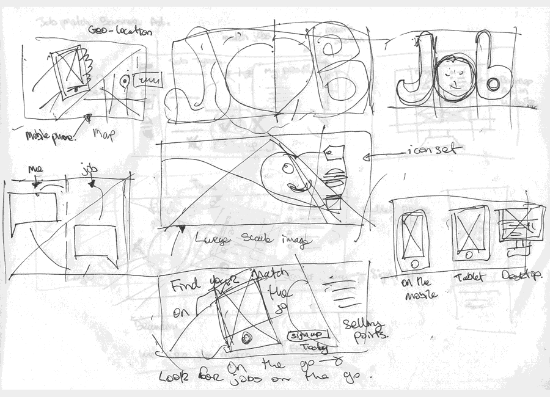Job Match - Irish Times banner ad - concept sketches
Job Match - Irish Times banner ad - concept sketches
Job Match - finished Irish Times banner ad
Job Match - finished Irish Times banner ad - showing height & width specifications
Wireframing for responsive website - job match - Collaborative DSA Project
The first stage of designing the wireframes was the use of a simple layout pad and black ink, a quick and easy way to make informed decisions. From one layout to another the process was fast and could be changed at the flip of a page.

Sketching Wireframe Layouts Showing user flow views between pages
Sketching Wireframe Layouts Showing user flow views between pages
Sketching Wireframe Layouts Showing user flow views between pages
Sketching Wireframe Layouts Showing user flow views between pages
Taking the wireframe sketches from black ink on a layout pad into a more digital format using Adobe Illustrator to build out skeleton wireframes.
iPad Homepage Layout Using Cacoo, pop & Adobe Illustrator
These wireframes show a users profile page, a list view of job type jobs and a job search by location on Google maps.
Then onto a more robust wireframing application, working with https://cacoo.com/, an online application loaded with pre-made templates that I then took apart and started to rebuild out my own wireframes for Desktop, iPad and the iPhone.
Wireframing an iphone app using balsamiq
Wireframing an iphone app using balsamiq
Wireframing an iphone app using balsamiq
Wireframing using balsamiq
Logo Design & Development
Caracas Coffee Logo
Finished logo design two colours on a mobile app
The Breif
Background:
Caracas Coffee is a gourmet coffee company that imports and roasts its own range of coffees. They also have two city centre cafés. They would like to be considered a gourmet coffee roaster which appeals to the discerning coffee drinkers. To that end they would like to be thought of as a counterpoint to the high street chain coffee store brands.
Customers:
Their customers would consider themselves to be discriminating coffee drinkers who will purposely seek out a quality coffee either in the café or purchase their ground coffee in retail outlets.
Design:
The name evokes Latin America and that is very much their intention – they would like to convey an earthy and honest feel as their coffee comes directly from the growers. As the coffee is also roasted in Ireland there is a local take they might like to include in the branding elements.
Deliverables:
- Mindmap
- Moodboard
- Sketches
- Illustrator draft of logo
Logo designs ideas - sketches black ink on layout pad
Logo designs ideas - sketches black ink on layout pad
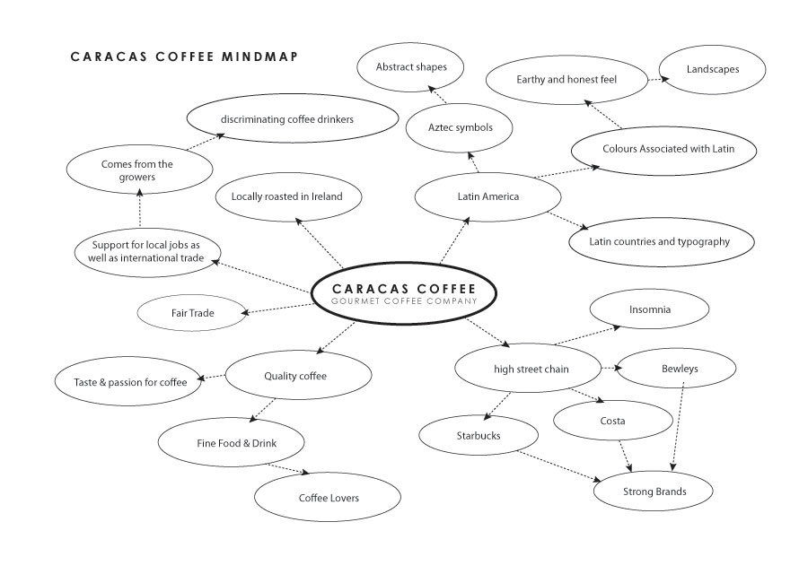Logo designs ideas - Mindmap
Logo designs ideas - sketches in Adobe Illustrator
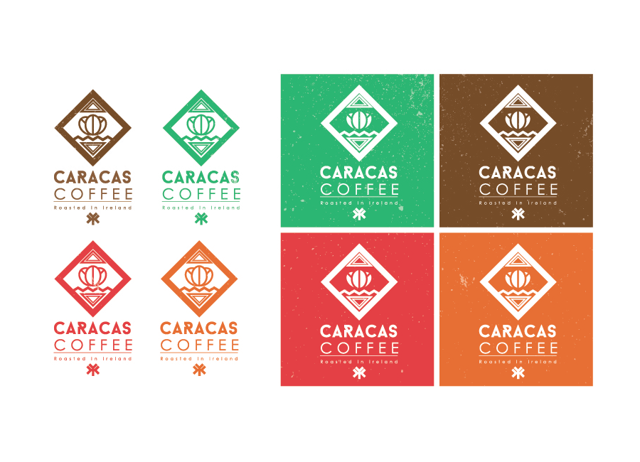Finished logo designs colour options
My brand idea comes from the simple geometric shapes inspired by the aztec of south America, strong but earthy colours are used to give a sense of Latin America. I have also tied the Irish link in by giving the shamrock the aztec treatment. The brand would be used on all aspect of design from their stationary, outdoor/indoor signage, vans, clothes/staff uniforms, food wraps, point of sale, kitchenware, website, app.
Finished logo design on large format posters
The aim would be to convey a sense of Latin America; taste, style and flavour here in Ireland. To bring some of that rich culture to people who may or may not have travelled to these parts of the world. The logo/brand design should get this message across. With this, they would also like to get across to their customers that their coffee is directly coming from the growers which also gives out the message that they are open and fair to them and to their suppliers. A customer relationship is built up of trust and honesty
Team Reboot Logo
Finished logo design two colours on a mobile app
This is the logo I have development for our team at the DSA - The name we all agreed works as all team members are rebooting their own careers. The symbol uses the restart/reboot icon in a highlight yellow, which stands out. The logo works well across all media from large-scale photos to icons on your phone. The logo was quickly developed out first with sketches then into Illustrator.
Logo designs ideas - sketches black ink on layout pad
Finished logo design on large format poster
Finished logo design on large format poster
Finished logo design on large format poster
Job Match Logo
Finished logo design on green gradient background
The Job Match logo: we needed something that was simple so I had a look at different types of icon design, I used Pinterest to get inspiration. I started to look at the shape and take inspiration from Steve Jobs quote “the only way to do great work is to love what you do” so I needed some type of love heart incorporated somehow into the logo, but didn’t want it to look like a valentines day card!
Logo designs ideas - sketches black ink on layout pad
Logo designs ideas - sketches black ink on layout pad
Logo designs ideas - Mood Boards
Logo Colour - Adobe Kuler: Color wheel | Color schemes
Logo designs ideas - Mood Boards
Finished logo design on red gradient background
Finished logo design on white background
Again taking inspiration from apple, I loved the apple icon finder on the imac, it suited our needs, with this in mind I developed the logo first of all on a layout pad and black ink sketching out possible ideas, to see which ones worked and which didn’t. Once we were happy with a direction I started to develop out the logo in Adobe Illustrator.
Kilmorey Care Logo
Finished logo design on white background showing guide lines
Finished logo design on white background
Kilmorey Care established in 2013 was formally the Mercy Care Group owned by the Sisters of Mercy Northern Province. They have being caring for the community since 1879. The logo had to reflect this in the design. The open door became a symbol of openness and caring in the community, it’s a strong solid brand the carried across well into print and online.
Kylemore UCC Digital Signage
Kylemore UCC digital signage menu boards
Kylemore UCC digital signage Petal Promise
Kylemore UCC digital signage menu boards
Kylemore Two And You Touch Screens
Kylemore Two And You Touch Screens
Kylemore Two And You Touch Screens
The Grapevine Interactive Touch Screens
The Grapevine Social Channel
The Grapevine Interactive Touch Screen designs for screens to be placed in public spaces, a strong and simple, effective design was needed.
The Grapevine Community Channel Touch Screens from darran Mc Cague on Vimeo.
The Grapevine from darran Mc Cague on Vimeo.
The Grapevine Market Channel
The Grapevine Community Channel
The Grapevine Community Channel - Home Screen
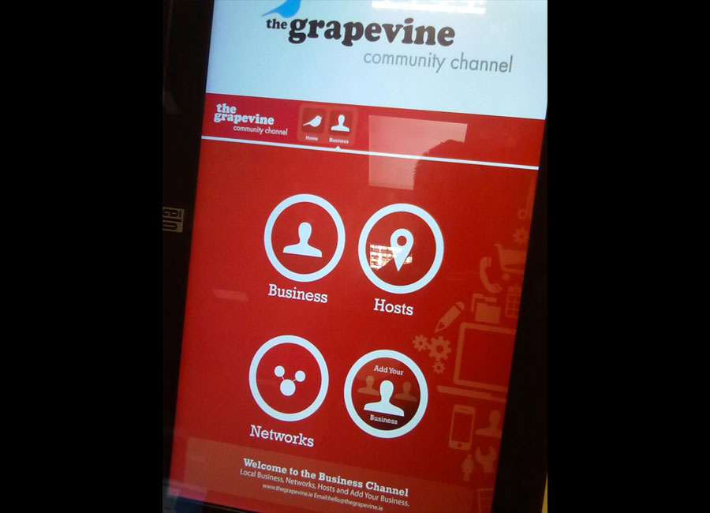The Grapevine Community Channel - Business Page
The Grapevine Community Channel - Knowledge Page
The Grapevine Community Channel - Social Page
The Grapevine Website
The Grapevine Website
The Grapevine Infographics
unforgotten Logo, Twitter & Facebook Banners
The Brief:
The Human Rights organisation, ‘Reprieve’ is running a two- week awareness raising campaign.
They will use Twitter and Facebook to spread the word about the plight of political prisoners worldwide. The campaign is called ‘#Unforgotten’.
You are to create mock-ups of customised social media pages for Twitter and Facebook using the templates provided. You are to create an identity for the ‘#Unforgotten’ campaign as well as use the ‘Reprieve’ logo provided.
Deliverables:
- Customised Twitter template PSD
- Customised Facebook template PSD
- ‘#Unforgotten’ logo
Sketching out logo & banner designs on a layout pad
Sketching concept ideas for typography treatments
Moodboard pins I have used on Pinterest to get inspiration for my design
Moodboard pins I have used on Pinterest to get inspiration for my design
Designing up my own typeface for unforgotten
From my sketches in my layout pad into adobe Illustrator, I played around with the spacing and letter forms to make up the logo.
The letterforms develped out, they took on the shape of prison blocks, much like the H-block prsion in Armagh.
Placing my logo into photoshop to design up my banner
Here you can see I have used an image of a prsion cell window with light coming through, I placed the logo/typeface into the design & played around with the layout until I was happy with the composition of image and text.
On this image here you can see a map of the world on the back of the cell wall, this marks out some of the countries where political prisoners are be held.
Unforgotten Twitter Logo
As I progessed through the design I needed a twitter and facebook icon to be used in the design, I decided I would use the first two letters of the "unforgotten" logo, I placed the two letters inside a speech bubble, the idea behind this is to give them a voice and to be heard. It also repersents an open door to freedom.
I have used a bright yellow colour which works taking inspistation from the amnesty international logo, it stands out against a black background.
Unforgotten finished Logo & Twitter Banner
Blossom Logo & Web Banner - DSA Workshop
The Brief
Workshop: You are to create a banner in Illustrator that is w960px x h270px which fulfils the brief outlined below
Use a mindmap, moodboard and sketches to generate ideas before using Illustrator
You can devise your own colour theme or one imported from Adobe Kuler
Deliverables:
- Mindmap
- Moodboard
- Sketches
- Banner in Illustrator native format (.ai)
‘Blossom’ is an annual garden show that showcases the best in flowers, plants, boutique gardens and gourmet food. It is an outdoor family event which takes place in a city centre park on August 14th.
The website is being mocked up at the moment but the designers want you to design a banner for the website in Adobe Illustrator. They would like you to create the logo, select the colour theme (which will be reflected when the site is built) and create an eye catching banner for the site that will convey a sense of fun for all the family, summer sunshine, growth and nature.
The theme of the event this year is the environment so it is important that this is reflected somewhere in the design.
- Vibrant Colours
- Incorporate Flowers
- Environment Theme
Sketching out logo & banner designs on a layout pad
Sketching out logo & banner designs on a layout pad
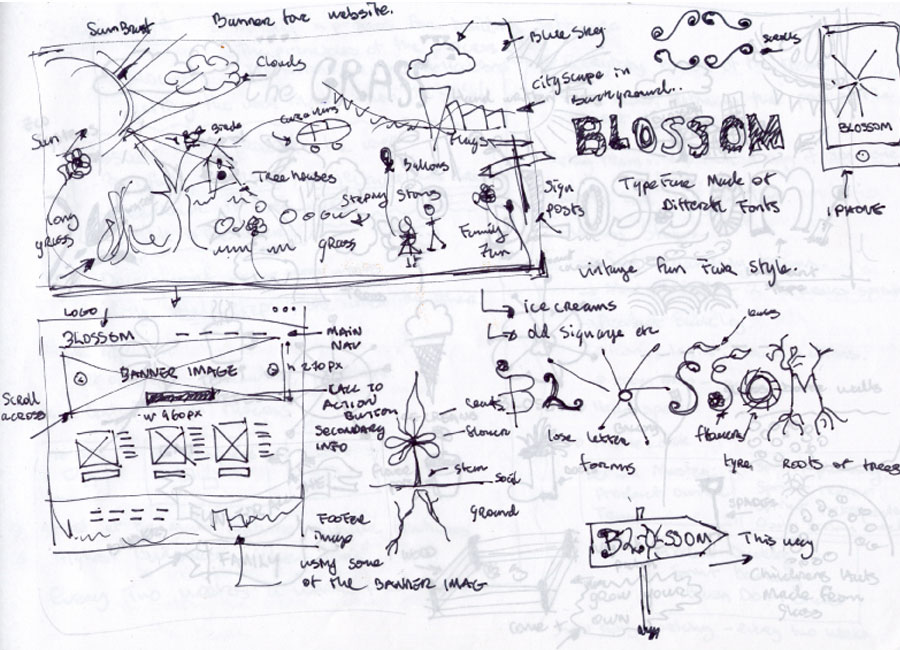Sketching out logo & banner designs on a layout pad
Blossom Mindmap
Moodboard pins I have used on Pinterest to get inspiration for my design
Blossom Banner Logo Prototypes in Adobe Illustrator
Blossom Banner & Logo Prototypes in Adobe Illustrator
Finished Blossom Banner & Logo in Adobe Illustrator
Finished Blossom Banner & Logo mockup on TV3 website
Blossom Logo mockup on festival t-shirts
The Aim:
The aim would be to get people to come and visit Blossom in the park, this is not just your ordinary flower show, its a show for all the family. It’s a family day out, of fun and education you would be encouraged to bring your own old objects, junk, stuff that you might have thrown away, you would be encouraged to recycle and upcycle these objects and make them into something different and place them into a garden so that visitors could engage with them. There would be different types of gardens on display; your normal cottage garden, a city garden, biodiversity/sustainability gardens, along with wild flower gardens. Lots to see and do, and when you are tired and hungry hang out in some of the cool log cabins/tree houses to grab a bite to eat and refuel with some gourmet food and coffee. Lots for the children to do, including little hiding play areas with wild flower gardens.
Usage:
My brand idea is made up of many different parts, just like the show its full of different parts to explore and engage with. I have used a few different typefaces here something I would not normally do but here I think it works. Along with this I have used four different colours, giving it a sense of playful fun for all ages. Around the letterforms are little icons that give a sense to the target audience what you might expect to see and do at the show. The branding would appear on festival flags, Tshirts, merchandise, colour systems, signage, maps, brochures etc.
Target Audience:
The target audience would be anyone how has a sense of fun, families with children looking for a super fun day out in the hot summer sun. You will learn from this and hopefully take something away that you can adapt to use in your own home and garden in terms of recycling, upcycling and biodiversity/sustainability. Anyone with an interest in gardening and to encourage others how might not be so greened figured. Not just your run of the mill flower show!
Ireland A Culinary Journey in The North – East book
mellifont abbey & monasterboice celtic high cross
Ireland A Culinary Journey in The North – East - Dermont seberry
Publisher: Dublin Institute of Technology
Description
Ireland A Culinary Journey in The North – East - Dermont seberry
Publisher: Dublin Institute of Technology
Description
Published by FoodEducators (Drogheda) in 2013. Book Design by Michelle McMahon & Darran Mc Cague, Culinary Inspirations Chefs John Wyer, Paul Kelly and Ronny Wolf. Primary Photographer Vadim Lee (Landscape and Seascape), QR tab video and editing David Mathews. Images from Shay Larkin, Paul Carroll, Conor Woods, Louth County Council, Fáilte Ireland, Northern Ireland Tourism Board,. Maps Spudgun Graphic Design Services, Copy Editor Anne Murphy.
193 p. : col. ill. ; 31 x 30 cm.
ISBN: 9781908784025
Publication Date: 2013
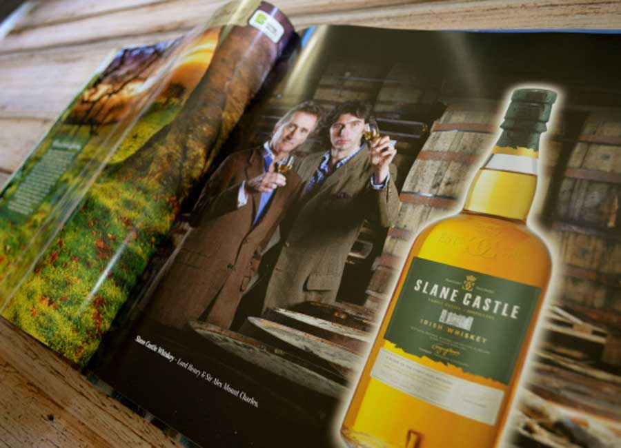slane castle whiskey
Boyne GROVE fruit farm & dan kelly's cider page layout
Eastern seaboard bar & grill
ghan house & cookery school
View more page layouts here
Louth Leader Partnership Information Pack
Driving rural development in Louth
Louth Leader Partnership A4 Folder, Brochure, Application Form Booklet, DL
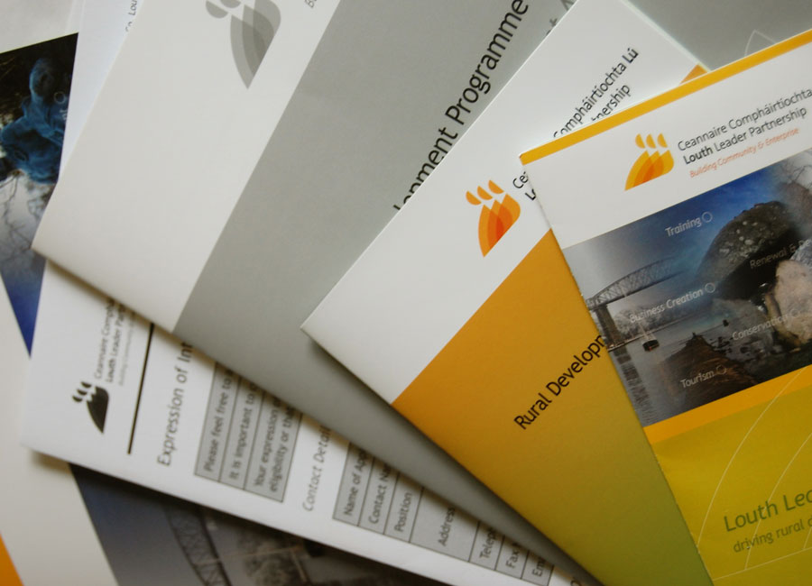
Louth Leader Partnership A4 Folder, Brochure, Application Form Booklet, DL
Louth Leader Partnership A4 Folder, Brochure, Application Form Booklet, DL
Louth Leader Partnership A4 Folder, Brochure, Application Form Booklet, DL
Ardee Turfman Festival
Ardee Turfman Festival - Design of Logo, Dl & T-shirts
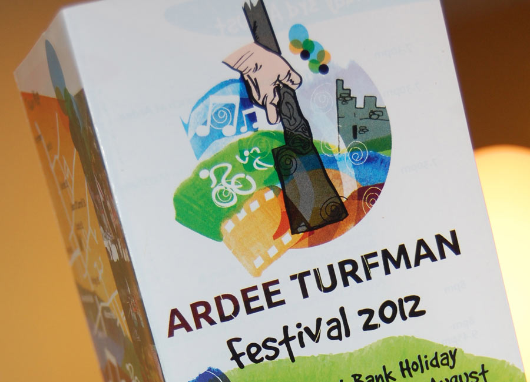
Ardee Turfman Festival - Design of Logo, Dl & T-shirts
Ardee Turfman Festival - Design of Logo, Dl & T-shirts
Ardee Turfman Festival - Design of Logo, Dl & T-shirts
Ardee Turfman Festival - Design of Logo, Dl & T-shirts
Ardee Turfman Festival - Design of Logo, Dl & T-shirts
Tallanstown wall of pride - Tidy Towns
Tallanstown wall of pride - Tidy Towns - Signage
Tallanstown wall of pride - Tidy Towns - Signage

Tallanstown wall of pride - Tidy Towns - Signage
Tallanstown wall of pride - Tidy Towns - Signage
The City Bin co
The City Bin co - Art production
The City Bin co - Billboard advertisements
The City Bin co - Billboard advertisements
Griffith College
Griffith College - Irish Times Newspaper Ads - Art production
Griffith College - Irish Times Newspaper Ads - Art production
Griffith College - Irish Times Newspaper Ads - Art production
Boyne GROVE fruit farm & dan kelly's cider page layout
Eastern seaboard bar & grill
ghan house & cookery school
View more page layouts here
Louth Leader Partnership Information Pack
Driving rural development in Louth
Louth Leader Partnership A4 Folder, Brochure, Application Form Booklet, DL
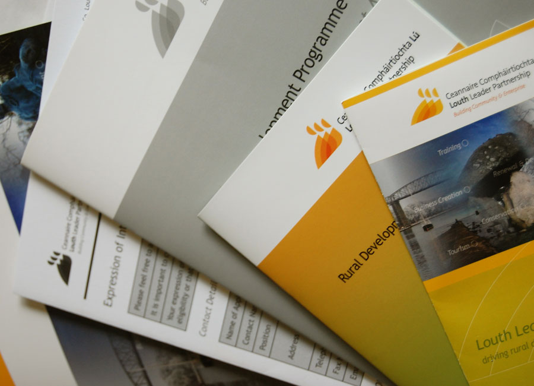
Louth Leader Partnership A4 Folder, Brochure, Application Form Booklet, DL
Louth Leader Partnership A4 Folder, Brochure, Application Form Booklet, DL
Louth Leader Partnership A4 Folder, Brochure, Application Form Booklet, DL
Ardee Turfman Festival
Ardee Turfman Festival - Design of Logo, Dl & T-shirts
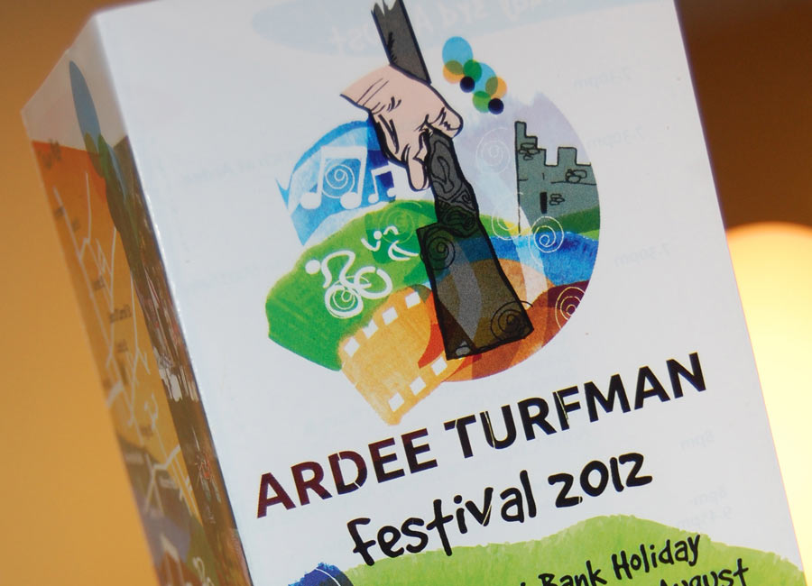
Ardee Turfman Festival - Design of Logo, Dl & T-shirts
Ardee Turfman Festival - Design of Logo, Dl & T-shirts
Ardee Turfman Festival - Design of Logo, Dl & T-shirts
Ardee Turfman Festival - Design of Logo, Dl & T-shirts
Ardee Turfman Festival - Design of Logo, Dl & T-shirts
Tallanstown wall of pride - Tidy Towns
Tallanstown wall of pride - Tidy Towns - Signage
Tallanstown wall of pride - Tidy Towns - Signage
Tallanstown wall of pride - Tidy Towns - Signage
Tallanstown wall of pride - Tidy Towns - Signage
The City Bin co
The City Bin co - Art production
The City Bin co - Billboard advertisements
The City Bin co - Billboard advertisements
Griffith College
Griffith College - Irish Times Newspaper Ads - Art production
Griffith College - Irish Times Newspaper Ads - Art production
Griffith College - Irish Times Newspaper Ads - Art production
Eastern seaboard bar & grill
ghan house & cookery school
View more page layouts here
Louth Leader Partnership Information Pack
Driving rural development in Louth
Louth Leader Partnership A4 Folder, Brochure, Application Form Booklet, DL
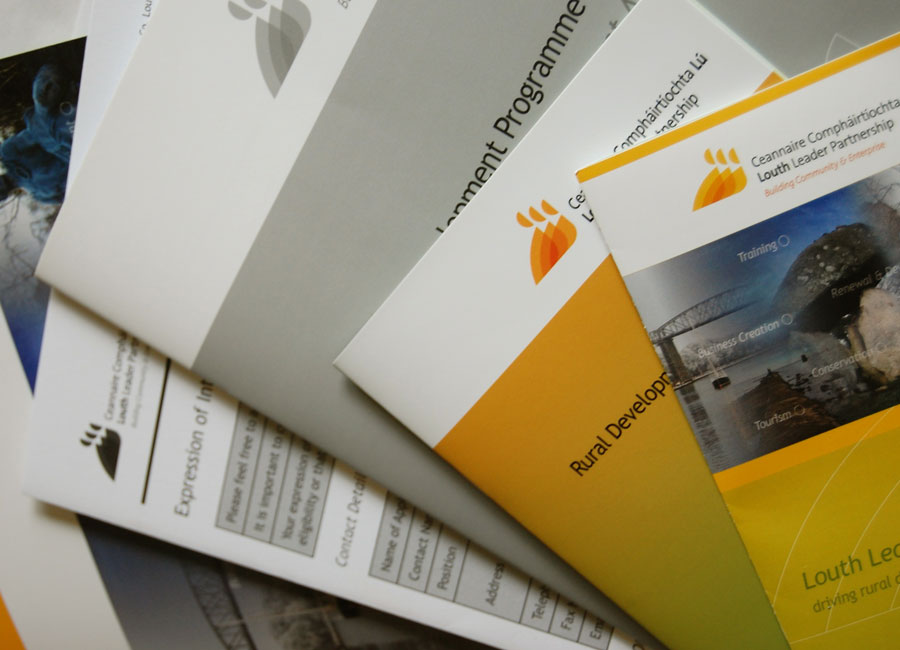
Louth Leader Partnership A4 Folder, Brochure, Application Form Booklet, DL
Louth Leader Partnership A4 Folder, Brochure, Application Form Booklet, DL
Louth Leader Partnership A4 Folder, Brochure, Application Form Booklet, DL
Ardee Turfman Festival
Ardee Turfman Festival - Design of Logo, Dl & T-shirts
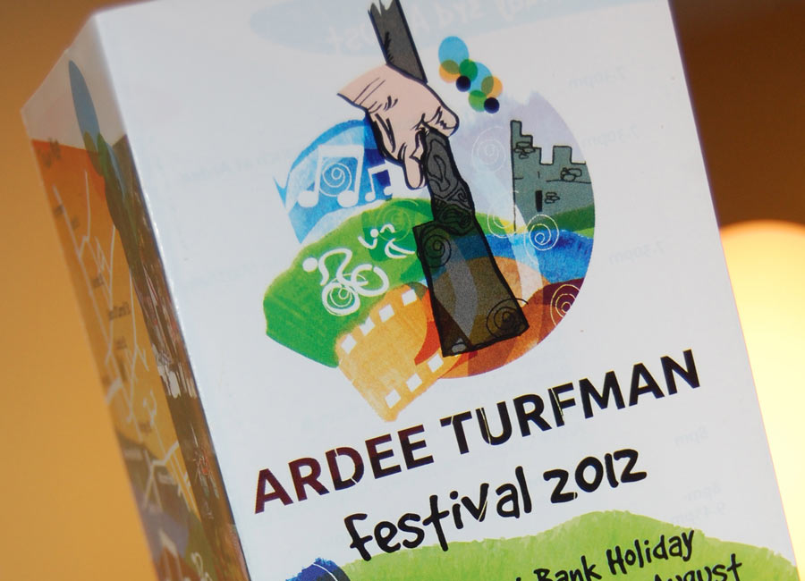
Ardee Turfman Festival - Design of Logo, Dl & T-shirts
Ardee Turfman Festival - Design of Logo, Dl & T-shirts
Ardee Turfman Festival - Design of Logo, Dl & T-shirts
Ardee Turfman Festival - Design of Logo, Dl & T-shirts
Ardee Turfman Festival - Design of Logo, Dl & T-shirts
Tallanstown wall of pride - Tidy Towns
Tallanstown wall of pride - Tidy Towns - Signage
Tallanstown wall of pride - Tidy Towns - Signage
Tallanstown wall of pride - Tidy Towns - Signage
Tallanstown wall of pride - Tidy Towns - Signage
The City Bin co
The City Bin co - Art production
The City Bin co - Billboard advertisements
The City Bin co - Billboard advertisements
Griffith College
Griffith College - Irish Times Newspaper Ads - Art production
Griffith College - Irish Times Newspaper Ads - Art production
Griffith College - Irish Times Newspaper Ads - Art production
ghan house & cookery school
View more page layouts here
Louth Leader Partnership Information Pack
Driving rural development in Louth
Louth Leader Partnership A4 Folder, Brochure, Application Form Booklet, DL
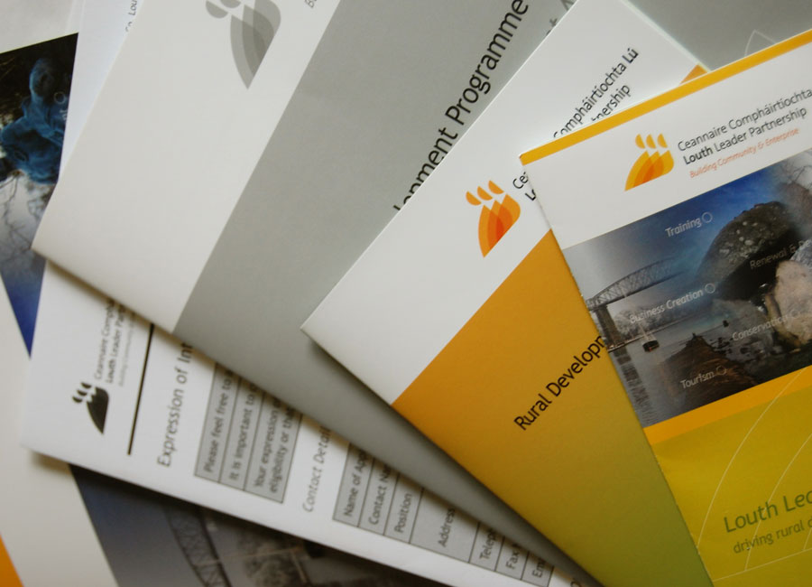
Louth Leader Partnership A4 Folder, Brochure, Application Form Booklet, DL
Louth Leader Partnership A4 Folder, Brochure, Application Form Booklet, DL
Louth Leader Partnership A4 Folder, Brochure, Application Form Booklet, DL
Ardee Turfman Festival
Ardee Turfman Festival - Design of Logo, Dl & T-shirts
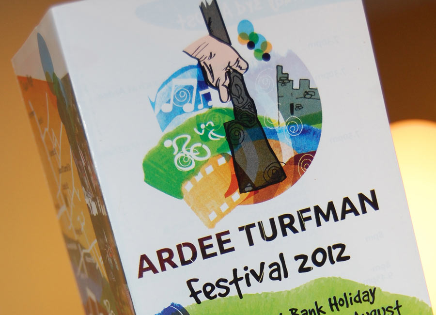
Ardee Turfman Festival - Design of Logo, Dl & T-shirts
Ardee Turfman Festival - Design of Logo, Dl & T-shirts
Ardee Turfman Festival - Design of Logo, Dl & T-shirts
Ardee Turfman Festival - Design of Logo, Dl & T-shirts
Ardee Turfman Festival - Design of Logo, Dl & T-shirts
Tallanstown wall of pride - Tidy Towns
Tallanstown wall of pride - Tidy Towns - Signage
Tallanstown wall of pride - Tidy Towns - Signage
Tallanstown wall of pride - Tidy Towns - Signage
Tallanstown wall of pride - Tidy Towns - Signage
The City Bin co
The City Bin co - Art production
The City Bin co - Billboard advertisements
The City Bin co - Billboard advertisements
Griffith College
Griffith College - Irish Times Newspaper Ads - Art production
Griffith College - Irish Times Newspaper Ads - Art production
Griffith College - Irish Times Newspaper Ads - Art production
Louth Leader Partnership Information Pack
Driving rural development in Louth
Louth Leader Partnership A4 Folder, Brochure, Application Form Booklet, DL
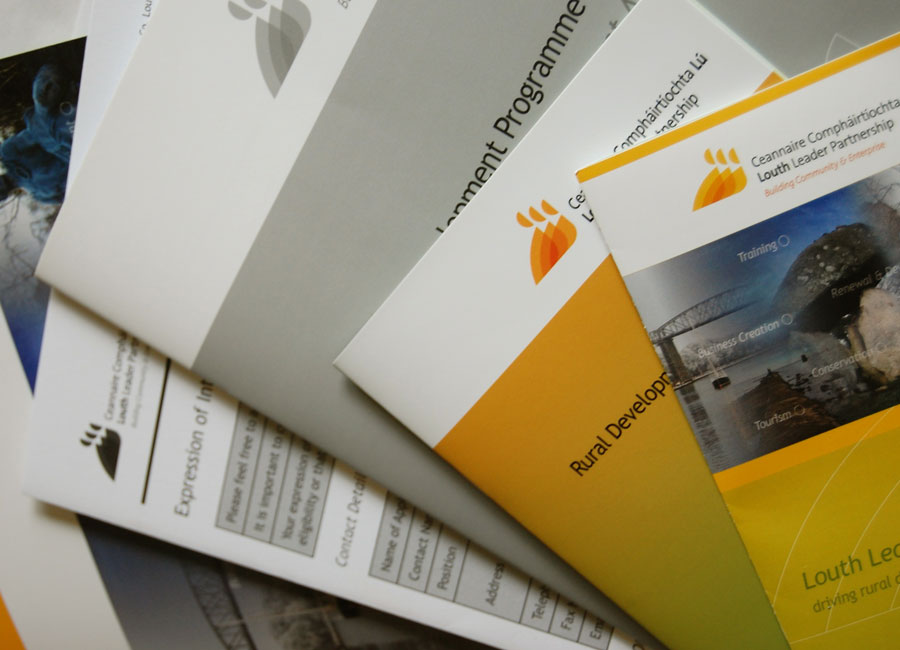Louth Leader Partnership A4 Folder, Brochure, Application Form Booklet, DL
Louth Leader Partnership A4 Folder, Brochure, Application Form Booklet, DL
Louth Leader Partnership A4 Folder, Brochure, Application Form Booklet, DL
Ardee Turfman Festival
Ardee Turfman Festival - Design of Logo, Dl & T-shirts
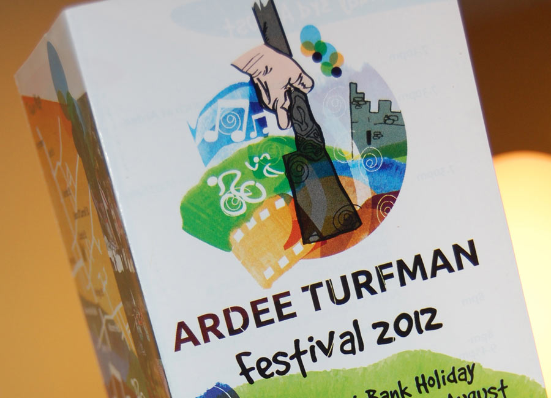Ardee Turfman Festival - Design of Logo, Dl & T-shirts
Ardee Turfman Festival - Design of Logo, Dl & T-shirts
Ardee Turfman Festival - Design of Logo, Dl & T-shirts
Ardee Turfman Festival - Design of Logo, Dl & T-shirts
Ardee Turfman Festival - Design of Logo, Dl & T-shirts
Tallanstown wall of pride - Tidy Towns
Tallanstown wall of pride - Tidy Towns - Signage
Tallanstown wall of pride - Tidy Towns - Signage
Tallanstown wall of pride - Tidy Towns - Signage
Tallanstown wall of pride - Tidy Towns - Signage
The City Bin co
The City Bin co - Art production
The City Bin co - Billboard advertisements
The City Bin co - Billboard advertisements
Griffith College
Griffith College - Irish Times Newspaper Ads - Art production
Griffith College - Irish Times Newspaper Ads - Art production
Griffith College - Irish Times Newspaper Ads - Art production
Photos by Kate - Personal Framed Prints
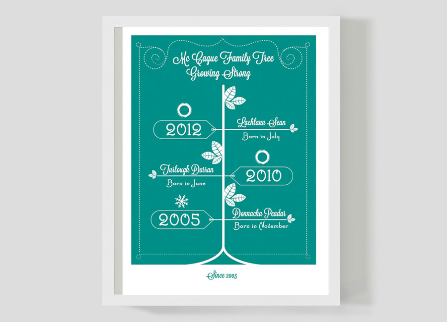
Poster Prints
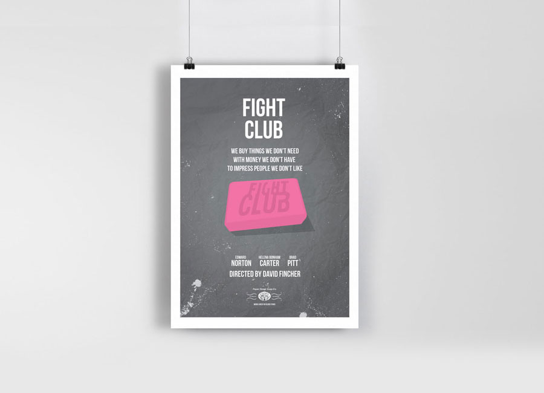
Vantastival App
My festival of choice is Vantastival, an independent family run festival that has been held in Co.Louth since May 2010. Its described on the website as “ a crazy idea that grew legs and, with the help of brothers, sisters, parents, friends and many complete strangers, we pulled off the first Vantastival on a wing and a prayer in May 2010”.
It’s a festival that incorporates peoples love for the outdoors, music, campervans and camping. It appealed to me as it is a unique event, it brings together many different types of people; some have a love of campervans, others a love of music but all with a desire to sit back and enjoy life, forget about the hustle and bustle of it for a weekend, kick back enjoy the music, chill out with people from different walks of life who share their passions.
Initial Sketches
Mood Boards
Vantastival App Balsamiqs Wireframes - User Flow

Vantastival Style Tile
The whole festival has a very relaxed vibe around it so I wanted that to be reflected in the design of the website and app. The location is key to the marketing of the festival, it adds to the whole chilled out vibe so I knew that I wanted to incorporate the surrounding mountains into the design, it’s a festival that showcases Irish musicians and promotes itself as being a family run event that feels like the festival goer is part of the family so I wanted the the site and app to be comfortable for the user. The forest was also a key part of the design I wanted to include them into the footer of the app and in the website itself.
Vantastival Website Balsamiqs Wireframes
Vantastival Website Hi-Fi Mock up
The logo design at its core uses the VW camper van, the title of the festival arches over the whole design in a slab san serif typeface Rockwell bold. The use of floral and leaf designs spiral out from the strong circle the surrounds the VW camper van icon. This gives a more hippy vibe like flower power of the 60’s and 70’s it gives it a vintage feel, the colours I have chosen to use also harp back to a vintage time with the Retro Red, Cool Mint and Cool Green all colours that you would see on VW camper vans of the 60’s and 70’s.
Vantastival Website Desktop Hi-Fi Mock up
Vantastival Website Desktop Hi-Fi Mock up
Vantastival Website Desktop Hi-Fi Mock up
Outside of the floral and leaf design site are guitars and a loud speakers this is reflected on the right side of the design as well making up the two main parts to the festival 1. the camper vans and 2. music bringing the two together in this magically unique festival at the foothills of the Cooley Mountains in Co.Louth . A ribbon underneath this ties the logo together and acts as information point to let people know when and where the festival is taken place. Overall, I feel all elements of my design reflect the ethos of the festival very well.
Let's Gather Responsive Website
Let’s Gather is a Digital School Museum application designed to empower school children tap into their family and local heritage stories using mobile devices
It comprises of a front end responsive website and a back end digital repository
Let's Gather Splash Screens
Let's Gather Desktop/iPad/iPhone6
Let's Gather People & Places
Let's Gather Things & Events
Let's Gather View Project & Share Project
Let's Gather Download & View Comments

Let's Gather Places & Upload A Project
Let's Gather Timeline/h4>
Let's Gather Design Process
Let's Gather Sitemap
Let's Gather Sitemap
Logo collection
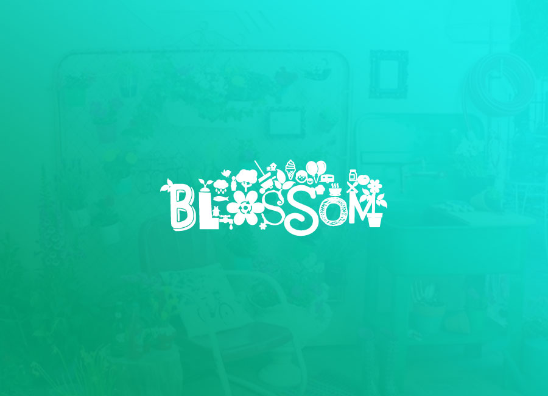 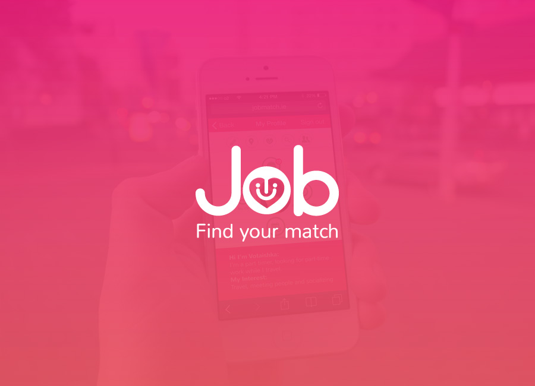
Motion Graphics
PROJECT X HELL VS HEAVEN - Medium from darran Mc Cague on Vimeo.
SALOU 2011 3 from darran Mc Cague on Vimeo.
Boneyard from darran Mc Cague on Vimeo.
Lights from darran Mc Cague on Vimeo.
Time from darran Mc Cague on Vimeo.
Data from darran Mc Cague on Vimeo.
Web Design
Responsive Web Design - DSA - Project - HTML5, CSS3, Media Queries
My Profile Page - 2 COLUMN LAYOUT
Create a skeleton website with three pages and two layouts (A and B shown below). The first page will contain a dummy login form (in section A.2). Your form should have a field‐set and a legend, as well as the following three fields:
- A username field (type="text")
- A password field (type="password") A login button (type="submit")
You should write CSS selectors for each of these in order to style them uniquely. Include your CSS in a separate file and link each of your pages to it.
Page two should be a profile page. Imagine that a user has successfully logged into your site, so welcome them in some way. You can hardcode the details on this page ‐ it doesn't need to know anything about the login form details at this stage. This page should contain the following elements.
A profile picture (yours, or some dummy content ‐ in section B.2) Some user information (e.g. last login, tagline, or similar ‐ in section B.2) A text block with some dummy content (in section B.3)
Page three must contain a 300 word discussion of you design rational, choice of colour scheme, etc. (in section A.2). Feel free to do more than 300 words if you wish.
Section A.1 and B.1 will contain a Navigation Bar with links to the three pages. This is a bit redundant for the first page, since in the real world your login form would forward the user onto the main page ‐ but your form will not be functional and we will still need a way to navigate at this stage!
Sketching Wireframes - Showing Login screen, My Profile page & My Design page layouts
My Design and Build process
My design from the offset was going to be clean and simple, with a very limited colour palate and simple use of typography to guide you through the pages. I first started to plan my design by sketching up layouts of wireframes and placing the elements on the page using a pen and layout pad. Once I was happy with the layout on paper I moved onto building out the layout using HTML 5 and CSS in Sumblime text 2
HTML - Coding in progress
HTML - Coding in progress
CSS - Coding in progress
Login Screen - 1 COLUMN LAYOUT
My Profile Page - 2 COLUMN LAYOUT
My Design Page - 1 COLUMN LAYOUT
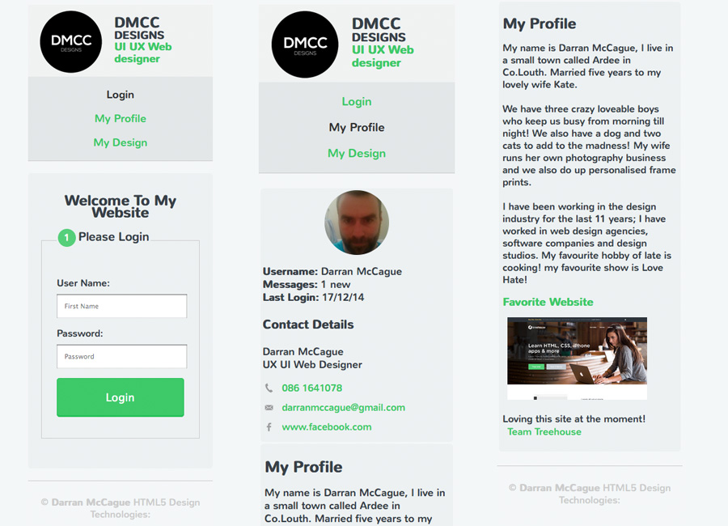My Website - Media Queries in action - Responsive layout
My Website - Media Queries in action - Responsive layout
View Responsive WebsiteDalríada Renovate Design – Responsive Design, HTML5, CSS3, Bootstrap, Javascript, WordPress. View Website
Meridian Security Website - HTML, CSS, Javascript, WordPress View Website
D1 Casino - HTML, CSS, Javascript, WordPress View Website
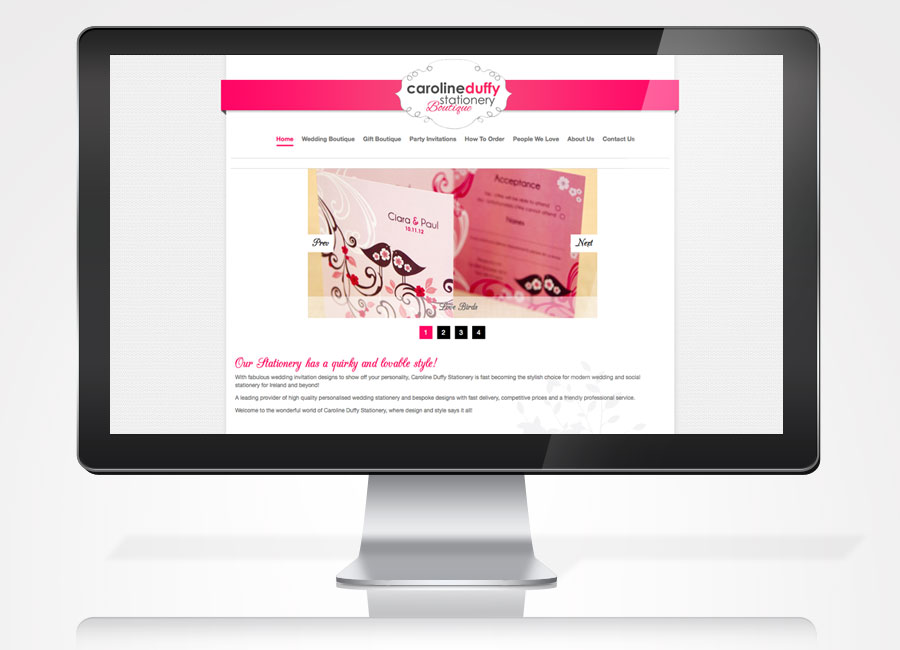Caroline Duffy Stationery Boutique – Responsive Design, HTML5, CSS3, Javascript View Website
Logo collection
Love's Fresh Pasta - Digital Menu Boards
Love's Fresh Pasta - Digital Menu Boards Flash Animations
Love's Fresh Pasta - Digital Menu Boards Flash Animations
Love's Fresh Pasta - Pizza Box
Notebooks
Typographical Concepts
Wireframing / Sitemap
Wireframing / Sitemap
Wireframing / Sitemap
Sitemap
Site Structure
Mindmaps
Plan Sketches
Concept Storyboards
Concept Storyboards
Concept Storyboards
Concept Storyboards
Wireframing / Sitemap
Concept Sketches - Sound & Movement
Concept Sketches - Sound & Movement
Concept Sketches - Sound & Movement
Concept Sketches - Sound & Movement
Concept Sketches - Sound & Movement
Concept Sketches - Sound & Movement
Concept Sketches - Sound & Movement
Concept Sketches - Sound & Movement
Concept Sketches - Sound & Movement
Concept Sketches - Sound & Movement
Concept Sketches - Sound & Movement
Concept Sketches - Sound & Movement
Concept Sketches - Sound & Movement
Concept Sketches - Sound & Movement
Concept Sketches - Sound & Movement
Noodle App
Noodle App Video Demo
Newbay Software / Synchronoss UI Desktop - Mobile - Client mock ups
Samples of UI designs to be used in presentations by pre sales, sales and developers. The aim was to integrate the companies products within the clients existing UI design.